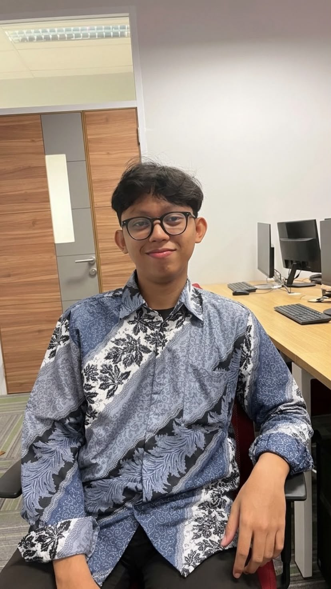

Mahasiswa Sistem Informasi
Mahasiswa Semester 3 Program Studi Sistem Informasi di Telkom University Jakarta yang memiliki minat dalam bidang teknologi informasi, pengembangan sistem, dan analisis data. Mampu bekerja secara individu maupun dalam tim, memiliki kemampuan komunikasi yang baik, serta cepat beradaptasi dengan lingkungan baru. Aktif mempelajari teknologi dan aplikasi berbasis digital untuk meningkatkan keterampilan serta pengalaman kerja. Berkomitmen untuk terus belajar, berkembang, dan memberikan kontribusi positif dalam lingkungan akademik maupun profesional.
S1 Sistem Informasi | 2025 - Sekarang
2022 - 2025
Pusat Data dan Teknologi Informasi DKI Jakarta